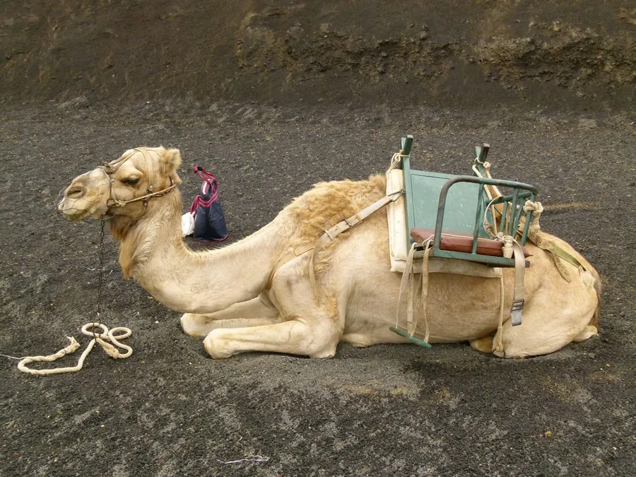

哺乳动物 · 动物界
单峰驼 Camelus dromedarius

适应炎热沙漠的家养骆驼，只有一个驼峰、四肢修长，耐高温和缺水，历史上是北非与西亚商队的重要运输工具。
- 分类
- 门脊索动物门纲哺乳纲目偶蹄目科骆驼科属骆驼属
- 栖息环境
- 北非、中东、中亚和澳大利亚的干旱沙漠与半荒漠
- 地理分布
- 家养于北非、中东、中亚、南亚和澳大利亚等干旱地区
- 保护级别
- 暂无评估（家养物种）
物种志
单峰驼体长 2.2–3.4 米，肩高 1.8–2.1 米，体重 300–650 kg。它只有一个驼峰，被毛为沙褐至浅棕色，颈部细长，吻部厚实，眼睑多层，鼻孔可闭合；四肢修长，脚掌宽大如垫，适合在高温沙地行走。
单峰驼是家养动物，约 3000 多年前在阿拉伯半岛被驯化，如今广泛分布于北非、中东、中亚和澳大利亚等干旱地区，野外没有真正的野生种群。它能耐 40℃ 以上的高温，可数天不饮水，取食灌木、干草和盐生植物，驼峰储存脂肪，在缺水缺食时分解供能。单峰驼是传统商队和游牧民族的重要交通工具，可产奶、肉和毛皮，也常被用于骑乘和比赛。雌驼妊娠期约 12–13 个月，每胎 1 仔，寿命约 40–50 年。
形态与习性
- 食性灌木、干草与盐生植物
- 体长2.2–3.4 m，肩高 1.8–2.1 m
- 体重300–650 kg
- 寿命约 40–50 年
- 繁殖妊娠期约 12–13 个月，每胎 1 仔
- 驼峰单个驼峰，储存脂肪
- 耐旱可数天不饮水，耐 40℃ 以上高温
趣味知识
- 单峰驼只有一个驼峰，而双峰驼有两个驼峰。
- 驼峰里储存的是脂肪，在缺水缺食时可以分解供能。
- 单峰驼约 3000 多年前在阿拉伯半岛被驯化。
- 单峰驼可数天不饮水，是沙漠商队的重要交通工具。